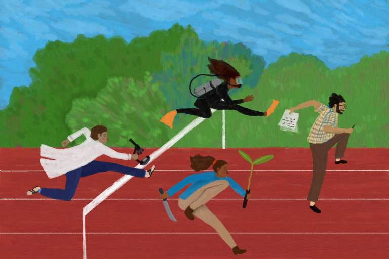

Sobre

Doutorando em Sociologia pelo Instituto de Estudos Sociais e Políticos da Universidade do Estado do Rio de Janeiro (IESP-UERJ). Mestre em políticas de desenvolvimento pela Duke University. Especialista em Política Sociedade (IESP-UERJ). Bacharel em Administração pela Faculdade DeVry Ruy Barbosa. Atualmente é gestor de ciências no Instituto Serrapilheira. Pesquisa racismo, ações afirmativas e diversidade na ciência.
e-mail: michelchagas@iesp.uerj.br
Produção Bibliográfica Selecionada
- 2026 CHAGAS, Michel; HORDGE-FREEMAN, Elizabeth. Diversidade em debate, v. 14, n. 1, p. 1077–1101. DOI: 10.63595/dedu.v14i1.20222
- 2026 CHAGAS, Michel. Diversidade na Ciência: da justiça social ao mercantilismo utilitário. Nexo Políticas Públicas, Opinião, 28 jul. 2026. Link
- 2023 CALDAS, Cristina; NEVES, Kleber; CHAGAS, Michel. Diversidade na ciência: 6 anos de práticas do Instituto Serrapilheira. Instituto Serrapilheira, 17 nov. 2023. Link
- 2023 CALDAS, Cristina; NEVES, Kleber; CHAGAS, Michel. Três histórias do Bônus da Diversidade. Instituto Serrapilheira, 17 nov. 2023. Link
- 2021 HORDGE-FREEMAN, Elizabeth; CHAGAS, Michel. O impacto nas comunidades negras dos EUA e Brasil. In: A pandemia e a gestão das mortes e dos mortos. São Paulo: UNIFESP/CAAF. Link
- 2020 CHAGAS, Michel. Por que a ciência precisa de diversidade? Instituto Serrapilheira / Ciência Fundamental, 25 nov. 2020. Link
Produção Técnica
- Consultor na elaboração do Guia de boas práticas em diversidade na ciência, Instituto Serrapilheira.